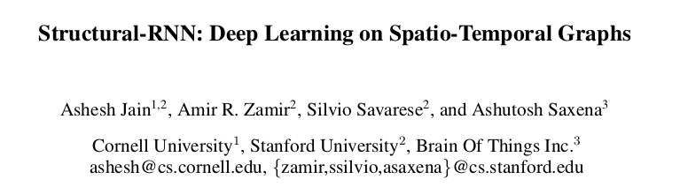
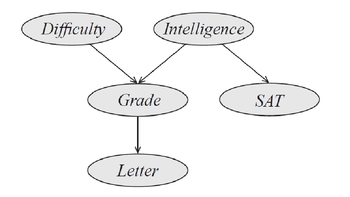

Probablistic graphical models
Why we should still study Probablistic graphical models?
- Combining Neural network with graphical models is the latest frontier

- Eventually Deep neural networks and graphical models are tools for solving problems. You need as many tools as possible.
Machine learning recap
\[ \linregequation{\colorfocus}{}{}{}{} \]
\[ \linregequation{}{\colorfocus}{}{}{} \]
\[ \linregequation{}{}{\colorfocus}{}{} \]
\[ \linregequation{}{}{}{}{\colorfocus} \]
\[ \linregequation{}{}{}{\colorfocus}{} \]
\[ \mlequation{}{}{}{\colorfocus}{} \]
\[ \color{red}{\underbrace{f}_{\text{model}}} (\overbrace{X}^{\text{features}}; \theta) \]
-
Equation for lines
\( f(x; a, b) = ax + b \) -
Neural networks:
\( f(X; W_1, W_2) = W_2\sigma(W_1X)) \)
-
Probablistic graphical models :
\( f(X; \theta) = \arg \max_{Y} P(Y, X; \theta) \)
Probablistic graphical models
\[ f(X; \theta) = \arg \max_{Y} P(Y, X; \theta) \]
Look at the dimensionality of the search space
If the size of the image is 100 x 100, then what is the size of search space?
\( 2^{100 \times 100} \)
- What should we do about the high dimensional search space?
- What is so "graphical" about "Probablistic Graphical Models"?
Recall some probability
- Independence: Events \(y\) and \(x\) are independent iff \[ P(y, x) = P(y)P(x) \]
- Conditional Probability of \(y\) given \(x\) is \( \begin{align} P(y|x) = \frac{P(y, x)}{P(x)} &\qquad \text{ or }P(y, x) = P(y|x)P(x) \end{align} \)
- Conditional independence:
\(y\) and \(x\) are conditionally independent given \(z\) iff \[ P(y, x|z) = P(y|z)P(x|z) \]
Note that, independence is intimately linked to factorization.
Different types of PGMs
- Bayes net
- Factor graphs
- Conditional Random Fields
- Markov Random Fields
Markov Random fields (MRF)
Define a graph \(G = (V, E)\) where \(V\) is a set of random variables and \(E\) is a set of edges such that each (or set of) random variable is conditionally independent of all other (or set of) random variables given its neighbors.
-
Draw an MRF for two random variables (not independent).
-
Draw an MRF for three random variables (not independent).
-
Draw an MRF for four random variables (not independent).
-
Draw an MRF for three random variables that are all independent.
-
Draw an MRF for three random variables \(x,y,z\) such that
\(x\) and \(y\) are conditionally independent given \(z\).
-
Draw an MRF for four random variables \(w, x,y,z\) such that
\(x\) and \(y\) are conditionally independent given \(z\) and \(w\)
and \(z\) and \(w\) are conditionally independent given \(x\) and \(y\)
Assume that RV \(y_1\) is independent of the rest of the graph given its neighbors \(y_2, y_3, y_4, y_5\).
\[ P(Y, X) = \prod_{i, j: i \ne j}P_{ij}(y_i, y_j, X) \prod_{i}P_i(y_i, X) \]
\[ P(Y, X) = \prod_{i, j: i \ne j}P_{ij}(y_i, y_j, X) \prod_{i}P_i(y_i, X) \]
is equivalent to the MRF:
This relationship was proved by Hammersley-Clifford in 1971
Recap: A recipe for solving problems using MRFs
- Model function as probability \( f(X; \theta) = \arg \max_{Y} P(Y, X; \theta) \)
- Make independence assumptions
- Write corresponding factorization \[ P(Y, X) = \prod_{i, j: i \ne j}P_{ij}(y_i, y_j, X) \prod_{i}P_i(y_i, X) \]
- Solve probability maximization efficiently
using PGM algorithms.
- Graph cuts
- Gibbs sampling
- Belief propagation
Define \( E(Y, X) = -\log P(Y, X) \) or
\[ E(Y, X) = \sum_{i, j: i \ne j}E_{ij}(y_i, y_j, X) + \sum_{i}E_i(y_i, X) \] \[ f(X; \theta) = \arg \min_{Y} E(Y, X; \theta) \]